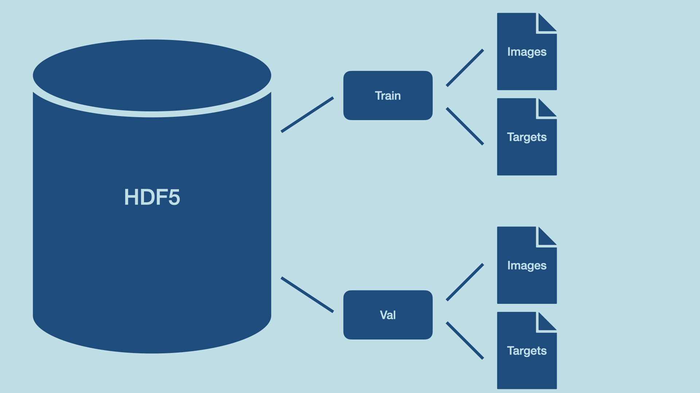

Getting Started with AI on Supercomputers
Speedup Data loading
Alexandre Strube // Sabrina Benassou
June 28, 2023
Schedule for day 2
| Time | Title |
|---|---|
| 09:00 - 09:15 | Welcome, questions |
| 09:15 - 10:30 | Speedup data loading |
| 10:30 - 11:00 | Coffee Break (flexible) |
| 10:30 - 13:00 | Parallelize Training |
I/O is separate and shared
All compute nodes of all supercomputers see the same files
- Performance tradeoff between shared acessibility and speed
- It’s simple to load data fast to 1 or 2 gpus. But to 100? 1000? 10000?
Jülich Supercomputers
- Our I/O server is almost a supercomputer by itself

JSC Supercomputer Stragegy

Data services
- JSC provides different data services
- Data projects give massive amounts of storage
- We use it for ML datasets. Join the project at Judoor
- After being approved, connect to the supercomputer and try it:
Data Staging
- LARGEDATA filesystem is not accessible by compute nodes
- Copy files to an accessible filesystem BEFORE working
- Imagenet-21K copy alone takes 21+ minutes to $SCRATCH
Data loading

Strategies
- We have CPUs and lots of memory - let’s use them
- multitask training and data loading for the next batch
/dev/shmis a filesystem on ram - ultra fast ⚡️
- Use big files made for parallel computing
- HDF5, Zarr, mmap() in a parallel fs, LMDB
- Use specialized data loading libraries
- FFCV, DALI
- Compression sush as squashfs
- data transfer can be slower than decompression (must be checked case by case)
- Beneficial in cases where numerous small files are at hand.
Libraries
- FFCV https://github.com/libffcv/ffcv and FFCV for PyTorch-Lightning
- Nvidia’s DALI https://developer.nvidia.com/dali
H5 file
